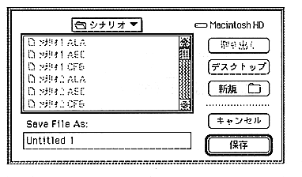

Name | File name | Format | Remarks |
Scenario file | xxxxxxxx.ASC | Text | Object, tag, time information, etc. Entered |
collision file | xxxxxxxx.ACT | text | Contains information such as collisions and actions |
Layout file | xxxxxxxx.ALA | Text | To create a CD-ROM image Contains |
Environment file | xxxxxxxx.ENV | Binary | Environment information used by the author editor . |
